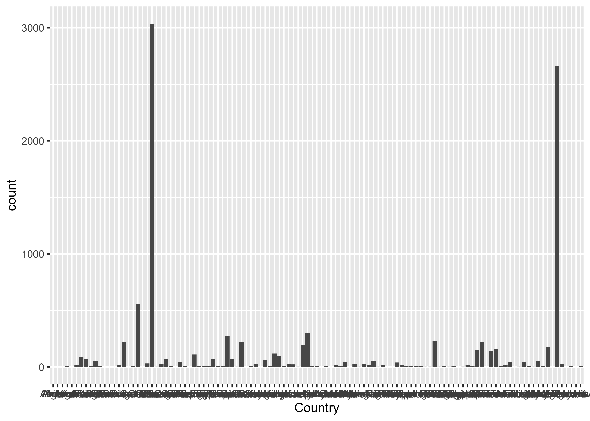
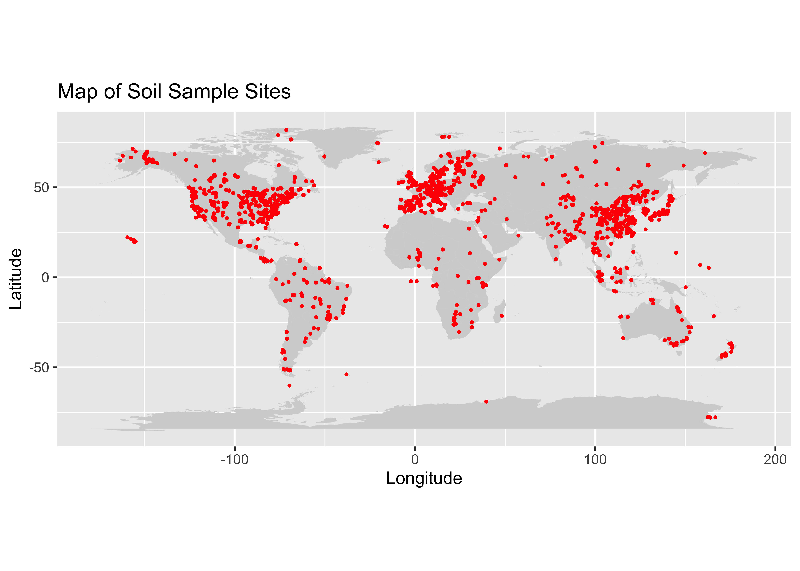

Data Inspection and Cleaning:
library(readr)
soil <- read_csv("SRDB_V5_1827/data/srdb-data-V5.csv", col_types = cols(.default = "c"))
head(soil)## # A tibble: 6 × 85
## Record_number Entry_date Study_number Author Duplicate_record Quality_flag Contributor Country Region
## <chr> <chr> <chr> <chr> <chr> <chr> <chr> <chr> <chr>
## 1 1 2008-09-26 2534 Bond-La… <NA> Q02 BBL Canada Manit…
## 2 2 2008-09-26 2534 Bond-La… <NA> Q02 BBL Canada Manit…
## 3 3 2008-09-26 2534 Bond-La… <NA> Q02 BBL Canada Manit…
## 4 4 2008-09-26 2534 Bond-La… <NA> Q02 BBL Canada Manit…
## 5 5 2008-09-26 2534 Bond-La… <NA> Q02 BBL Canada Manit…
## 6 6 2008-09-26 2534 Bond-La… <NA> Q02 BBL Canada Manit…
## # ℹ 76 more variables: Site_name <chr>, Site_ID <chr>, Study_midyear <chr>, YearsOfData <chr>,
## # Latitude <chr>, Longitude <chr>, Elevation <chr>, Manipulation <chr>, Manipulation_level <chr>,
## # Age_ecosystem <chr>, Age_disturbance <chr>, Species <chr>, Biome <chr>, Ecosystem_type <chr>,
## # Ecosystem_state <chr>, Leaf_habit <chr>, Stage <chr>, Soil_type <chr>, Soil_drainage <chr>,
## # Soil_BD <chr>, Soil_CN <chr>, Soil_sand <chr>, Soil_silt <chr>, Soil_clay <chr>, MAT <chr>,
## # MAP <chr>, PET <chr>, Study_temp <chr>, Study_precip <chr>, Meas_method <chr>, Collar_height <chr>,
## # Collar_depth <chr>, Chamber_area <chr>, Time_of_day <chr>, Meas_interval <chr>, …First let’s look at where the data is from. Here we see the top 12 most frequent countries represented in the set:
 First we will load the data and plot the locations of all the historic measurements by latitude and longitude.
background_map <- map_data("worldHires")
soil_samps <- read_csv("SRDB_V5_1827/data/srdb-data-V5.csv")## Warning: One or more parsing issues, call `problems()` on your data frame for details, e.g.:
## dat <- vroom(...)
## problems(dat)## Rows: 10366 Columns: 85
## ── Column specification ─────────────────────────────────────────────────────────────────────────────────
## Delimiter: ","
## chr (23): Entry_date, Author, Quality_flag, Contributor, Country, Region, Site_name, Site_ID, Manipul...
## dbl (62): Record_number, Study_number, Duplicate_record, Study_midyear, YearsOfData, Latitude, Longit...
##
## ℹ Use `spec()` to retrieve the full column specification for this data.
## ℹ Specify the column types or set `show_col_types = FALSE` to quiet this message.#adding our map:
ggplot() +
geom_polygon(data = background_map, aes(x = long, y = lat, group = group), fill = "lightgrey") +
geom_point(data = soil_samps, aes(x = Longitude, y = Latitude), color = "red", size = 0.5) +
coord_fixed() +
labs(title = "Map of Soil Sample Sites", x = "Longitude", y = "Latitude")## Warning: Removed 383 rows containing missing values or values outside the scale range (`geom_point()`).